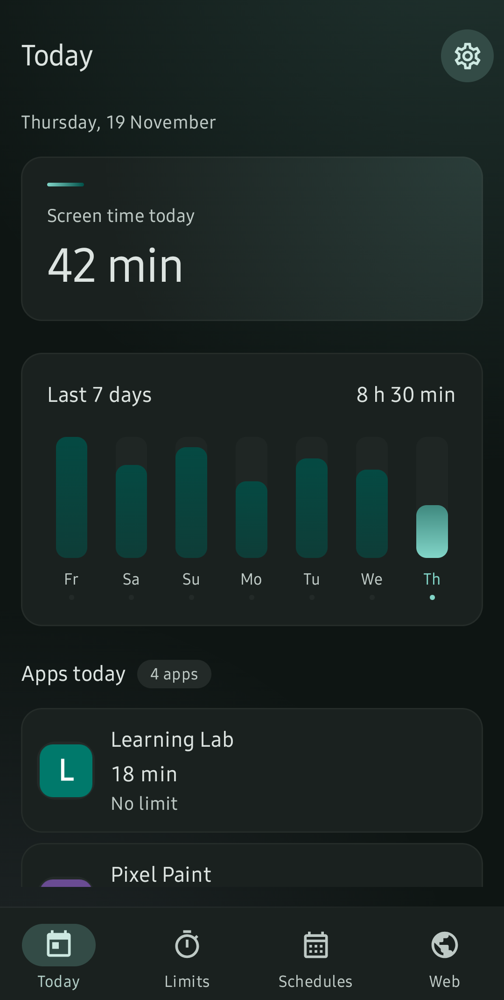
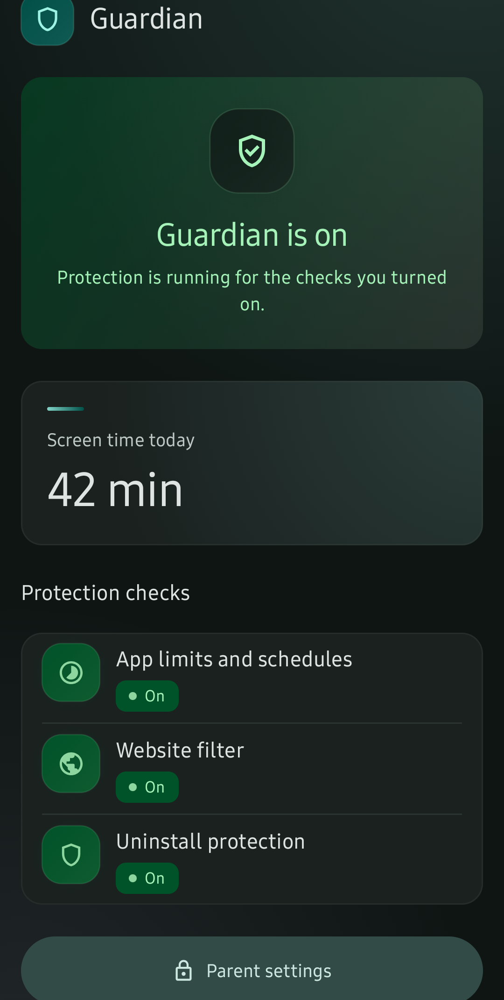
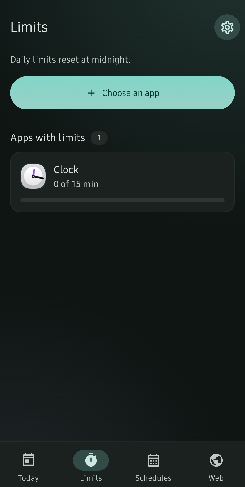
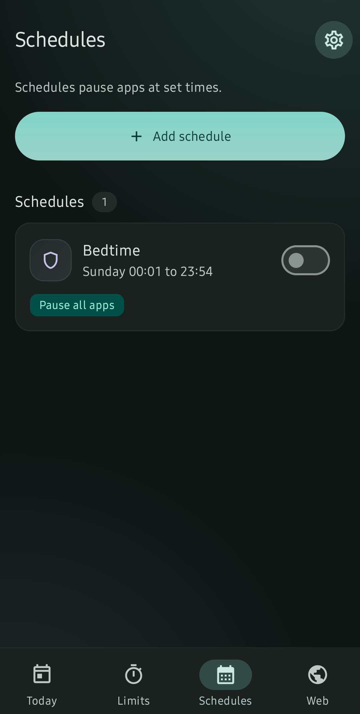
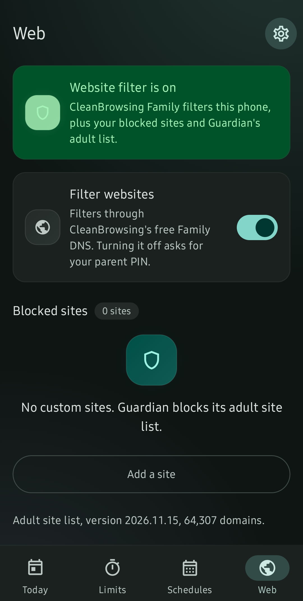
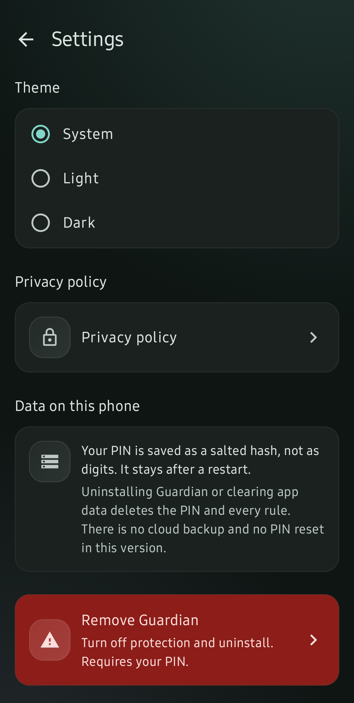

Daily app limits
Choose the time per app. When it runs out, Guardian shows a pause screen the child cannot dismiss alone. Limits reset at midnight.
Android 8.0 and up · Version 1.0.0
Guardian gives one Android phone daily app limits, bedtime and study schedules, and a website filter. There is no account to create, no subscription, and no server that watches your child.
Free · 14 MB · signed APK · Android 8.0 and up

What it does
Everything is enforced on the device. The child can always see that protection is on, and the parent can always see what it is doing.
Choose the time per app. When it runs out, Guardian shows a pause screen the child cannot dismiss alone. Limits reset at midnight.
Block everything except the apps you allow. Windows can cross midnight and overlap, so school nights and homework hours can differ.
A bundled adult-domain list plus the sites you add, resolved over encrypted DNS. The local VPN carries DNS lookups and nothing else.
Today and the last seven days, per app, taken from Android's own usage stats. No separate tracking, no background collection.
Changing rules, opening the parent screens, or removing the app asks for the PIN. It is stored only as a salted PBKDF2 hash.
An always-on notification proves the checks are running, and the status screen names any check that has quietly turned off.
Screens
These are the real screens from version 1.0.0. The two Today screens use sample usage data; the rest show a phone with the real configuration.





Setup
Download the APK, allow your browser to install it when Android asks, then switch that permission back off if you prefer.
Usage access, Accessibility, the local VPN, notifications, and Device Admin for uninstall protection. Each one is explained before the system screen opens.
Limits, schedules, and blocked sites, behind the parent PIN. The child sees that protection is on, so the rule never looks like a secret.
Limits of a DNS filter
Read this before you install. A parental-control app that promises everything is selling you something.
Install
Signed with the project's release key. Installing a newer version over an older one keeps your PIN, rules, and usage data.
Not on Google Play yet. The signed bundle is prepared for the internal testing track, so the only download today is the APK above. Play Protect may warn about apps from outside the store — check the fingerprint first, then install anyway.
SHA-256 of the APK
4477d391d299d4d36e1c1ef1385e0f35beb61f69f943bd62da0d5b8c9749f559
Signing certificate (SHA-256)
BB:8E:AA:B0:27:F9:29:FA:B4:1B:B1:86:B0:4D:29:58:07:62:8D:CE:4E:E4:B6:50:75:1C:8C:F5:D9:77:A2:69
Questions
Yes. No subscription, no ads, no in-app purchases, and no paid tier. There is nothing to sign in to, so there is nothing to bill.
With uninstall protection on, removing Guardian requires the parent PIN. Turning that protection off in Android settings is also gated behind the PIN. A factory reset always removes it, as it removes everything else.
No. Guardian is Android only, for phones running Android 8.0 or newer.
The local VPN carries DNS lookups only — roughly the first request for each site, not your browsing traffic. Guardian does not proxy, inspect, or log other traffic, and it keeps no browsing history. Normal browsing speed is not affected by the tunnel beyond that first lookup.
Lookups fail instead of quietly resolving unfiltered. That is deliberate: a blocked site should not become reachable because the resolver had a bad day.
On the phone, in the app's private storage: usage figures, rules, schedules, blocked sites, and the PIN hash. There is no server copy, because there is no server. The only thing that leaves the phone is the domain names looked up while the filter is on, sent over encrypted DNS to CleanBrowsing's Family resolver.
No. Guardian is built for a parent managing a child's phone. It shows a permanent notification while it runs and never hides itself, so the person using the phone can always tell that it is there.
Install the newer APK over the old one. Because it is signed with the same key, your PIN, rules, and usage data stay in place.
Yes, the full Android project is public: github.com/Nor2522/Guardian.